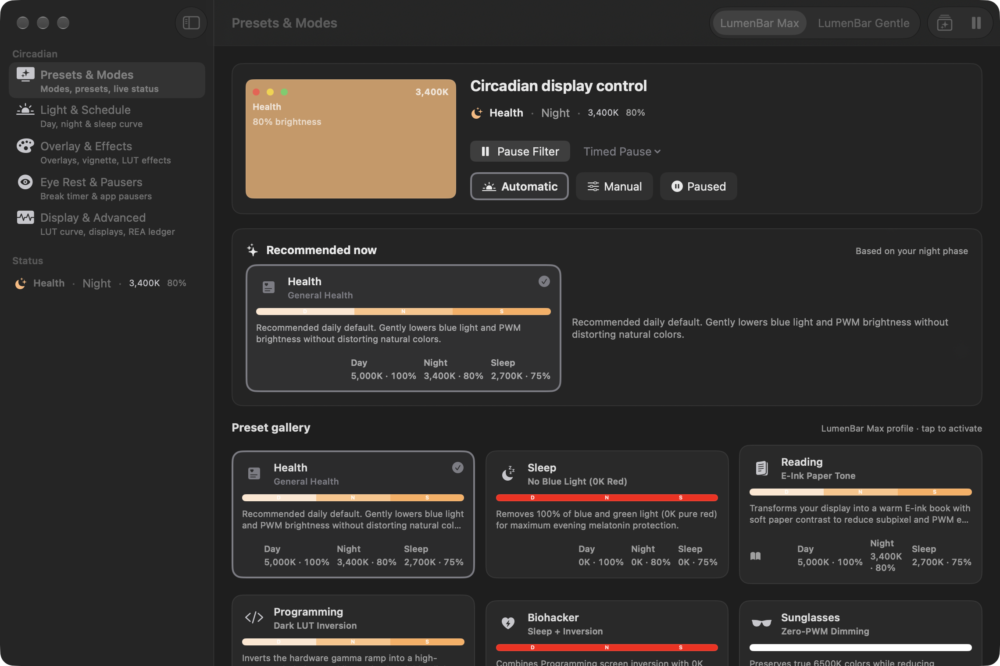

LumenBar
Good evening.
Your screens can rest too.
What it does tonight
Three modes.
One menu bar.
Automatic
Manual
Paused · 15m · 1h · until morning

Pick a preset
Eleven looks. Max or Gentle.
HealthSleepReading
ProgrammingBiohackerSunglasses
DarkMovieOverlay
GamingCustom
Hardware gamma, 0K to 10000K, with smooth cross-fades.
Your displays
Each monitor, its own look.
Main displayMain look · 3400K
Display 2Filter off
Display 3Own look · 5600K
Plug a monitor in, and LumenBar re-applies.
Eye rest
20-20-20.
Then you are set.
A full-screen break, a quiet sound cue, and everything stays on this Mac. No account, no cloud, no telemetry.